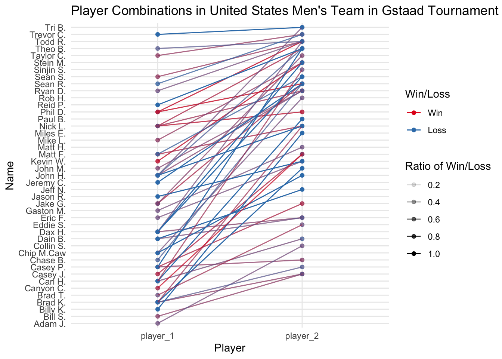
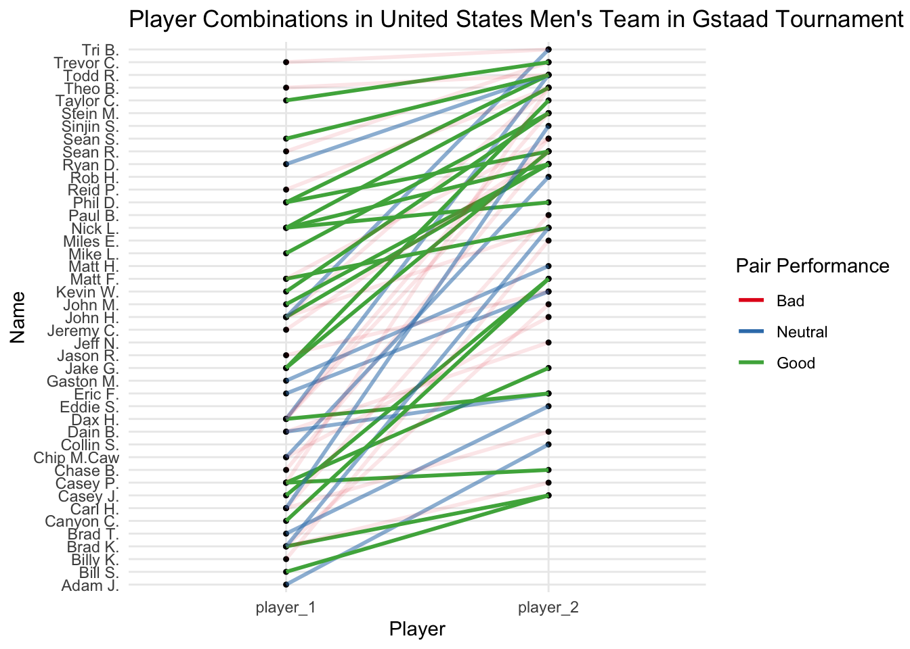

knitr::opts_chunk$set(warning = FALSE)TidyTueday lessons : Volleyball Matches
Learnt lessons from TidyTuesday on Volleyball matches
Beach Volleyball Pairs
For this weeks TidyTuesday dataset, the R4DS community has given a dataset on Volleyball Match statistics. This contained data in a wide format and the matches were mostly from the international FIVB tournaments but about 1/3 is from the US-centric AVP. I had only a vague idea about Beach Volleyball as I personally have played only regular volleyball(is there a term for that?) during PE period in school. So to get an idea I opened up youtube and searched beach volleyball and looked at the first match, which turned out to be a women’s beach volleyball match. And so I watched and I had a small question as to what pairs of players normally go well together as I heard the commentators explaining how these players played well with these partners and so on.
Load Data
Filtering
Since it was far less biased to look at the International Matches I had filtered it below.
# select only international matches
int_df <- vb_matches %>%
filter(circuit == "FIVB")Here I found a fun little use for functional programming as I wanted to get only the columns that had a complete rate of over 95%. I refrained from trying to handle the serves and attack columns due to this reason as their complete rate was quite low and to impute them would have caused even more of an hassle.
#select only the columns that have a complete rate of over 95%
sum_na <- compose(sum,is.na)
is_not_na <- negate(is.na)
complete_rate_mapper <- as_mapper(~ 100 - (sum_na(.x)/length(.x) * 100 ))
int_df <- int_df[,names(keep(map(int_df,complete_rate_mapper),
~ .x > 95))]
# skimr::skim(int_df)Data Cleaning
Initially I found having two countries of the players seperate odd and therefore thought of merging them only to realize that there were instances where the countries didn’t match. (which was quite odd to me). Regardless I decided to name those mixed and let it be.
#merge player countries
int_df <- int_df %>%
mutate(w_country = if_else(
w_p1_country == w_p2_country,w_p1_country,"Mixed"),
l_country = if_else(
l_p1_country == l_p2_country,l_p1_country,"Mixed")
) %>%
select(-l_p1_country,-l_p2_country,-w_p1_country,-w_p2_country)There were so many tournaments played in this dataset and to look at them all together made all the graphs really cluttered and therefore I thought to use only the top 10 tournaments with highest number of records.
# recode gender variables
int_df <- int_df %>%
mutate(gender = fct_recode(gender,"Men" = "M","Women" = "W"))
# limiting the problem to the top 10 tournaments
top_ten_tournaments <- int_df %>% select(tournament) %>% count(tournament) %>% arrange(desc(n)) %>% top_n(1) %>% .$tournamentSelecting by nint_df <- int_df %>% filter(tournament %in% top_ten_tournaments)Finding the best player performances
Even then there were too many, hence I decided to limit my scope to only the Mens team in USA. So to start finding the best player pair combinations the first thing I did was to count the Wins and Losses for the player combinations seperately. and then I combined them together and then got the percentages of wins and losses from total matches per player combination. And then I plotted a pair plot to see it.
#for one country and one gender and for one tournament
m_country <- "United States"
m_gender <- "Men"
m_w_df <- int_df %>%
filter(gender == m_gender & w_country == m_country) %>%
count(w_player1,w_player2) %>%
mutate(win_loss = "Win")
m_l_df <- int_df %>%
filter(gender == m_gender & l_country == m_country ) %>%
count(l_player1,l_player2) %>%
mutate(win_loss = "Loss")
m_df <- bind_rows(m_w_df %>%
rename(player_1 = w_player1) %>%
rename(player_2 = w_player2)
,m_l_df %>%
rename(player_1 = l_player1) %>%
rename(player_2 = l_player2))
m_df <- m_df %>%
mutate(player_1 = gsub("([A-Z][a-z])*\\s([A-Z])[a-z]*","\\1 \\2.",m_df$player_1),
player_2 = gsub("([A-Z][a-z])*\\s([A-Z])[a-z]*","\\1 \\2.",m_df$player_2)) %>%
group_by(player_1,player_2) %>%
mutate(perc = n / sum(n)) %>%
ungroup()
ggplot(m_df %>%
mutate(pairs = row.names(m_df),
win_loss = factor(win_loss,levels=c("Win","Loss"))) %>%
gather(player,name,player_1,player_2),
aes(x=player,y=name,group=pairs)) +
geom_point(aes(color=win_loss,alpha=perc)) +
geom_line(aes(color=win_loss,alpha=perc)) +
labs(x = "Player",y="Name",alpha="Ratio of Win/Loss",color="Win/Loss",title="Player Combinations in United States Men's Team in Gstaad Tournament for all years") +
scale_color_brewer(palette="Set1")
An approach with a different statistic
Now there were several problems with the above statistics. One was that multiple colors on one another really didn’t convey which one was the best.
Instead of using that confusing statistic I decided to use something different. I calculated the ratio of wins and losses as before and this time I calculated the difference between the ratios and then decided to categorize them by postive, negative or zero change.
In addition I also used some regular expressions to edit the names of the players so that I can put the names on the plot without cluttering the entire axis.
# different approach
m_w_df <- int_df %>%
filter(gender == m_gender &
w_country == m_country
) %>%
count(w_player1,w_player2,name="n_wins") %>%
rename(player_1 = w_player1) %>%
rename(player_2 = w_player2)
m_l_df <- int_df %>%
filter(gender == m_gender &
l_country == m_country
) %>%
count(l_player1,l_player2,name = "n_loss") %>%
rename(player_1 = l_player1) %>%
rename(player_2 = l_player2)
m_df <- m_w_df %>%
full_join(m_l_df) Joining with `by = join_by(player_1, player_2)`m_df[is.na(m_df$n_wins),"n_wins"] <- 0
m_df[is.na(m_df$n_loss),"n_loss"] <- 0
m_df <- m_df %>%
mutate(total = n_wins + n_loss,
ratio_wins = n_wins / total,
ratio_loss = n_loss / total,
ratio_diff = ratio_wins - ratio_loss) %>%
mutate(good_bad = factor(case_when(
(ratio_diff > 0) ~ 0.8,
(ratio_diff < 0) ~ 0.2,
(ratio_diff == 0) ~ 0.5
),levels=c(0.2,0.5,0.8),labels=c("Bad","Neutral","Good"))) %>%
select(-ratio_wins,-ratio_loss,-total,-ratio_diff)
m_df <- m_df %>%
mutate(player_1 = gsub("([A-Z][a-z])*\\s([A-Z])[a-z]*","\\1 \\2.",m_df$player_1),
player_2 = gsub("([A-Z][a-z])*\\s([A-Z])[a-z]*","\\1 \\2.",m_df$player_2))
m_df %>%
mutate(pairs = row.names(m_df)) %>%
gather(player,name,player_1,player_2) %>%
ggplot(aes(x=player,y=name,group=pairs)) +
geom_point(size=0.9) +
geom_line(aes(color=good_bad,alpha=as.numeric(good_bad)),size=1.0) +
labs(x = "Player",y="Name",
color="Pair Performance",
title="Player Combinations in United States Men's Team in Gstaad Tournament for all years",
alpha = "Pair Performance") +
scale_color_brewer(palette="Set1") +
scale_alpha_continuous(breaks=c(0.2,0.5,0.8))
Ending notes
Although the plot looked beautiful, it’s still not helpful at all. Maybe adding a plotly widget with tooltip text or annotating the best combinations might be helpful but I dont see any way to annotate without cluttering the plot.